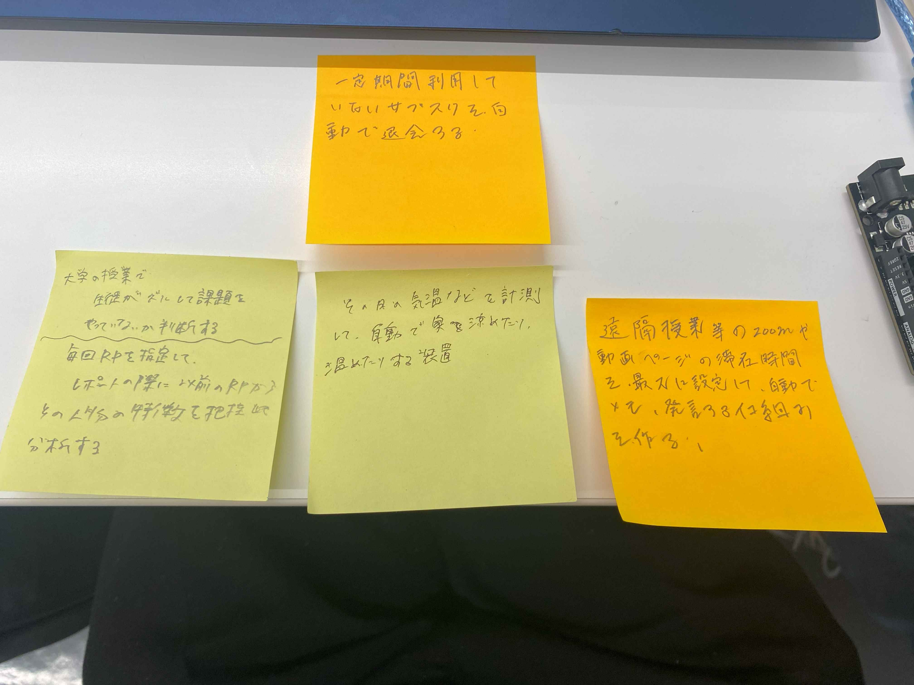

〜IOTを使って実験/実現したい事〜
・IOTとは「Internet Of Things」の略。
インターネットを介して家電や事業など様々な分野に接続することで工程を簡略化できる。
<2>IOTを利用した動画
URL
グループで出た構想

グループでIOTを使ったものについて考えてみました。
IOTでどんなことができるか考えてみた
私が考えたのは、一定期間利用していないサブスクリプションサービスを自動で契約解除するサービスです
実現できるかは度外視して、サブスクリプションサービスの収益の多くは、利用していない８割のユーザーから賄われていると聞いたことがあるため、思いつきました。